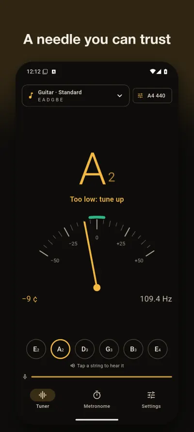
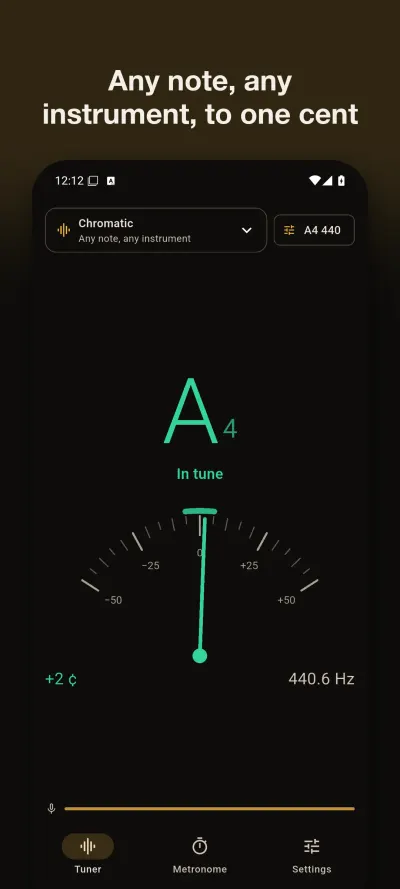
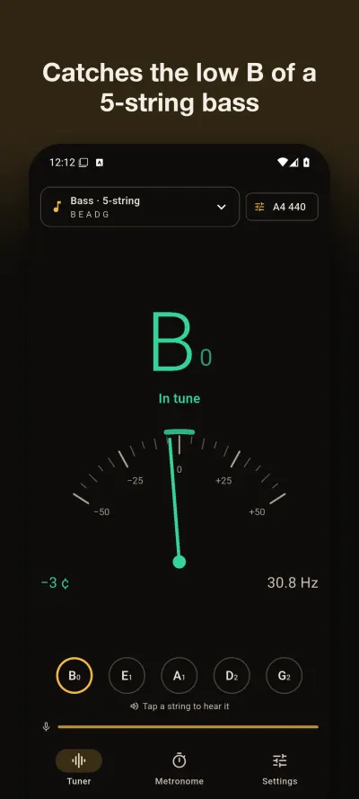
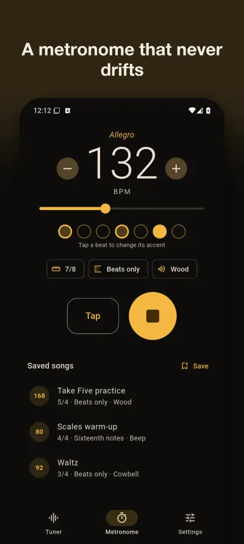
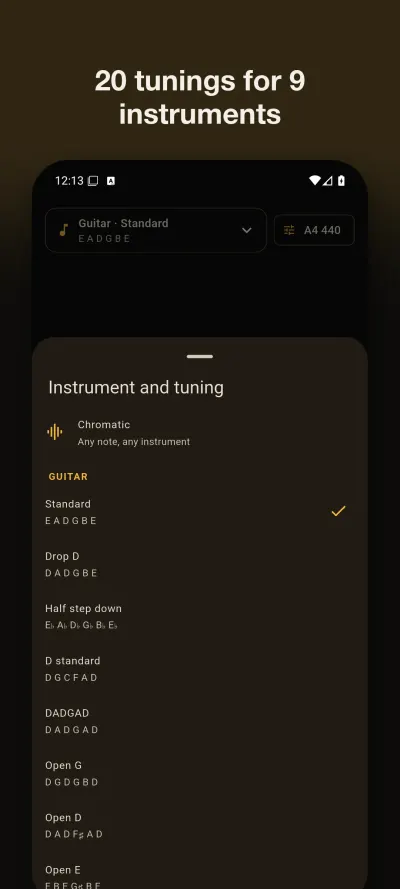
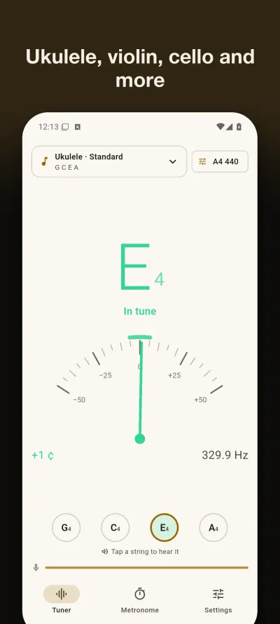

A chromatic tuner and metronome for Android, with no ads
Play a note and TuneLog shows the note, how many cents it is off and which way to turn the peg. It reads down to the 31 Hz low B of a 5-string bass, and the metronome holds its tempo because each bar plays as one exact audio loop.
Get it on Google PlayAndroid. Free: chromatic tuner, guitar in standard tuning, calibration and a 4/4 metronome (20 to 300 BPM, tap tempo). TuneLog Pro, one in-app purchase paid once: every instrument and tuning, reference tones, transposing instruments, all time signatures, subdivisions, accents, click sounds and saved songs.






Try it now in your browser
Two free tools, no install and no signup. Nothing you play leaves your browser.
What the app does
A calm needle
The note and octave, cents, frequency in Hz, and a green zone for within 5 cents. A new note moves the needle at once; a steady note keeps it still.Low notes
Long analysis frames catch the low B of a 5-string bass (31 Hz). Phone microphones hear little of it, so pluck firmly and hold the phone close.A microphone that comes back
After a call, an alarm or a change of headphones, the tuner restarts listening by itself. A watchdog restarts it if audio stops arriving.Instruments and tunings
Guitar in eight tunings, 4 and 5-string bass, ukulele, baritone ukulele, violin, viola, cello, double bass, mandolin and banjo. The nearest string lights up. Chromatic works for anything else.Calibration and note names
A4 from 415 to 466 Hz. Notes as C D E, Do Re Mi or German letters with H. Written notes for B♭, E♭ and F instruments.Metronome
20 to 300 BPM and tap tempo. With Pro: 1/4 to 12/8, eighths, triplets, sixteenths, an accent for each beat, four click sounds and saved songs.Where it helps
- Guitar and bass. Tune each string on its own and watch it tick off. Standard tunings and frequencies.
- Violin, viola and cello. Set A to 442 if your group plays there, then tune the A string first.
- Ukulele. The high G string is not mistaken for a low one, because the nearest string is matched by its real pitch.
- A noisy room. Get closer to the phone, mute the other strings, and read how to get a steady reading.
- Daily practice. Set a tempo, then raise it a little at a time. How to practice with a metronome.
Support
Questions, bugs, or feature requests: email contact@eastframe-technology.com. A human reads every message, usually the same day.
A short captioned walkthrough, recorded on iPhone, shows the app at work.
Frequently asked
The needle does not move. Check that TuneLog may use the microphone (Settings › Apps › TuneLog › Permissions). Play close to the phone's microphone, one string at a time. If another app is recording, TuneLog keeps retrying and starts listening as soon as the microphone is free.
My low strings are hard to read. TuneLog reads down to 31 Hz, the low B of a 5-string bass. Phone microphones pick up little of the fundamental of very low notes, so pluck firmly, let the string ring and hold the phone near the instrument.
My orchestra tunes to 442. Tap "A4 440" at the top of the tuner (or Settings › Calibration) and pick 442, or any value from 415 to 466 Hz.
Does the metronome keep steady time? Yes. Each bar is rendered as one exact audio loop, so the clicks do not depend on what the screen is doing. The screen stays on while it plays unless you turn that off in Settings.
Is there a subscription? No. TuneLog Pro is a single purchase. Restore it on a new phone from Settings.
Does it need an account or the internet? No. TuneLog has no account and no internet connection, and it shows no ads.
Privacy policy
Effective 2 November 2026. TuneLog is published by Eastframe Technology LLC.
What we collect: nothing. TuneLog has no account system, no analytics, no advertising, and no crash reporting service. It never connects to the internet and sends no data to us or anyone else.
Microphone. TuneLog uses the microphone only while the tuner is on screen. The sound is analysed on your device, a fraction of a second at a time, to find its pitch. It is never recorded, saved, or sent anywhere.
Your settings (calibration, note names, tuning, metronome setup and saved songs) are stored on your device until you uninstall the app.
Purchases are handled by the App Store or Google Play. We do not see your payment details.
Third parties. The app contains no third-party advertising or analytics code. The only external pages it opens are this page and the store's rating page, and only when you tap them.
Children. TuneLog is not directed at children and collects no personal information from anyone.
Changes. A new version of this policy will be published at this address with a new effective date.